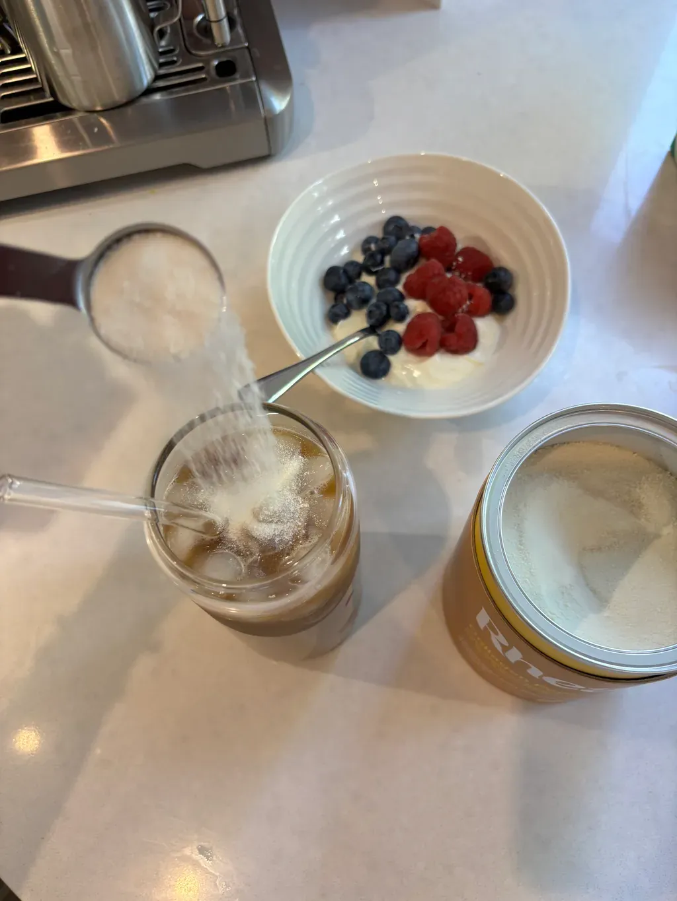
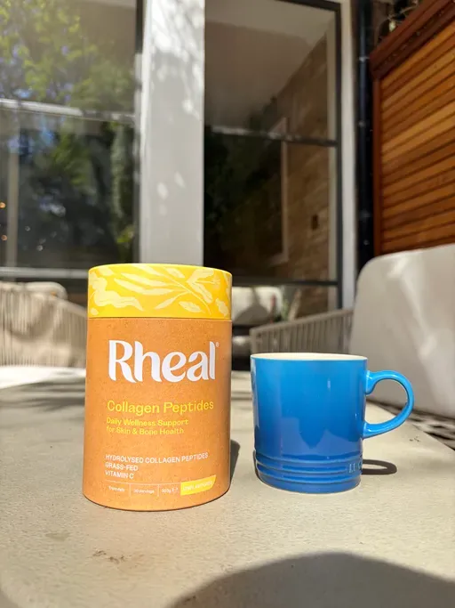
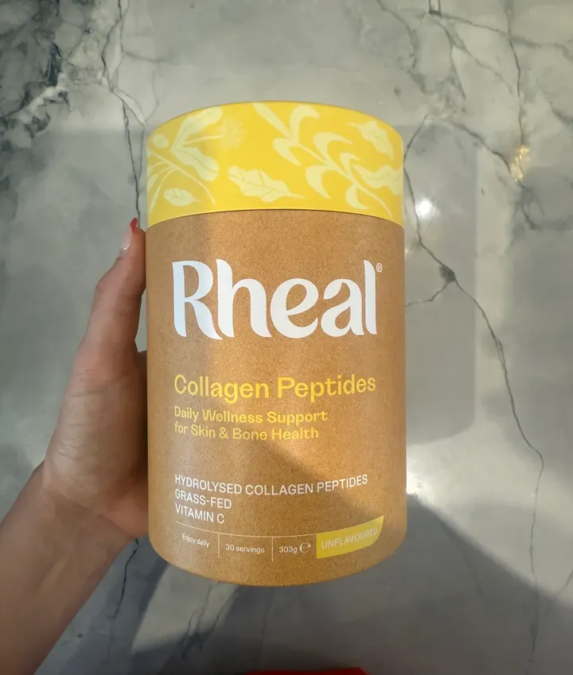

Stiffer Mornings, A Clicky Hip, A Shoulder That Won't Quite Loosen? You're Not Imagining It.
Your body makes less collagen every year from your mid-20s. Here's what that actually means, why so many people try collagen and give up, and the three things worth checking before you buy another tub.
It rarely starts with anything dramatic. A shoulder that takes a few more rolls to loosen. A hip that clicks on the stairs. Most of us shrug it off as “just getting older”, but there’s biology behind it, and it changes what you should look for in a collagen.
01 · Why it happens
Why does this happen?
Collagen is the most abundant protein in your body. It's the main structural protein in your skin, and it's found throughout your tendons, ligaments, cartilage and bones: the connective tissue that holds you together and keeps you moving.
Your body makes its own collagen, but production slows from your mid-twenties, by roughly 1% a year. For women, menopause speeds things up: research suggests skin collagen falls by around 30% in the first five years after menopause.
- ~1%
- less collagen every year from your mid-20s
- ~30%
- drop in skin collagen in the first five years after menopause
That's not a failing. It's biology. And it's the whole reason the collagen category exists.
“I'm sceptical of supplement claims, but a double-blind study won me over.”“I'm active, I'm not old, but my body started feeling it”
02 · The 3 checks
Tried collagen and felt nothing?
Check these 3 things
Plenty of people try collagen, don't notice much, and decide it doesn't work. Often the problem is what was in the tub. Before you buy another, flip it over and check:
Flip the tub over. Look for:
- Dose: around 10g per serving
- Vitamin C: on the ingredients list
- Source: a named origin you could check
1. The dose
Look for the grams per serving. Collagen research typically uses around 10g a day. A lot of products give you far less, sometimes a few grams tucked inside a "beauty blend". If you're taking a fraction of what was studied, it's hard to expect much.
2. Vitamin C
Your body can’t make collagen without Vitamin C. It's an essential co-factor in the process. Vitamin C contributes to normal collagen formation for the normal function of bones, cartilage and skin.¹ A surprising number of collagen powders don't include any.
3. Where it actually comes from
"Grass-fed" and "wild-caught" are on lots of labels. Far fewer brands tell you the real source. Look for an origin you can check.

03 · Rheal Collagen Peptides
The one that ticks all three
Rheal Collagen Peptides ticks every box on the list, and it's the one we're featuring here.
Rheal is a UK brand (you might know them from Dragons' Den). Their community asked them for a collagen for years, and they said no until they could source one they were happy with. What they ended up with:
- 10,000mg hydrolysed collagen peptides in every scoop
- Vitamin C added, so the co-factor is already in there¹
- European grass-fed bovine, Types I and III
- Unflavoured: it disappears into your coffee
- No fillers, no flavourings, nothing else
- Made by a certified B Corp
The bovine collagen they use has also been tested in a 12-week double-blind, placebo-controlled study, in which 73% of participants saw a measurable improvement in the appearance of
wrinkles.²

04 · Real reviews
What are people saying?
-
Sharon
Second tub in and my skin feels so much more hydrated. Tried other collagens but this is the one I trust 🙌
-
Irene Bradley
Others clumped in my tea or smelled fishy. This one mixes straight into my coffee and I can't taste a thing.
-
Cathy Blaylock
Been taking it daily for months and people keep telling me my skin is glowing! Highly recommend 💛
-
Cheryl Dewsbery
Paused my subscription to cut back and came straight back for the collagen. Restarting took seconds, so flexible.
05 · What to expect
What to expect, and how to take it?
Not overnight, and be wary of anything that promises otherwise. Collagen is a daily habit, not a quick fix. Most studies run for around 12 weeks, so that’s a fair window to judge it on.
Take one scoop (10g) a day. It’s unflavoured and dissolves into hot or cold drinks, so most people stir it into their morning coffee.
No capsules, no clumps.
“I ran out of Collagen peptides, noticed, went back on it.”

06 · The cost
Is it worth the money?
A tub is 30 servings. Bought one-off it's £30, about £1 a serving. On subscription it works out at around 80p a day, with free delivery, and you can skip, pause or cancel online whenever you like.
For comparison, some of the best-known collagen brands work out at nearly £2 a serving, often for a smaller dose.
And if it's not for you, Rheal offers a 90-day money-back guarantee.
See options & pricing (opens in a new tab)07 · Bovine or marine
Bovine or marine?
Rheal makes two. Marine Collagen is wild-caught, MSC-certified and made in Norway: the skin-first option. Collagen Peptides is European grass-fed bovine, Types I and III: the whole-body option, and it still supports skin.¹
Can't decide? Bovine does both.
08 · How to get it
How do I get it?
Step 1: Tap the button below to go to Rheal's website.
Step 2: Choose Collagen Peptides (or Marine), and whether you want a one-off tub or a subscription.
Step 3: Rheal delivers it to your door. Skip, pause or cancel any time online.
Rated 4.4 on Trustpilot · 90-day money-back guarantee
Comments
Jan Holt
Does it taste of anything?
Like · Reply · 👍 6 · 2 h
Look Well, Feel Well
Nope, it’s unflavoured. Stir it into your morning coffee, tea or a smoothie and you won’t notice it’s there.
Like · Reply · 👍 9 · 1 h
Carol Ainsley
How long before you notice anything?
Like · Reply · 👍 2 · 3 h
Look Well, Feel Well
It works best as part of your routine, not as a quick fix. Take one scoop every day and give it time. Everyone’s different, which is why it comes with a 90-day money-back guarantee.
Like · Reply · 👍 4 · 2 h
Mandy Fletcher
How long before you notice anything?
Like · Reply · 👍 3 · 5 h
Look Well, Feel Well
Most studies run for 12 weeks, so give it at least that long, every day.
Like · Reply · 👍 7 · 4 h
Beverley Oakes
Where does Rheal's bovine collagen come from?
Like · Reply · 👍 11 · 6 h
Look Well, Feel WellJulie Rennard
Rheal Collagen Peptides is sourced from European grass-fed cattle. The collagen is hide-derived and produced through a specific enzymatic hydrolysis process.
Like · Reply · 👍 5 · 5 h